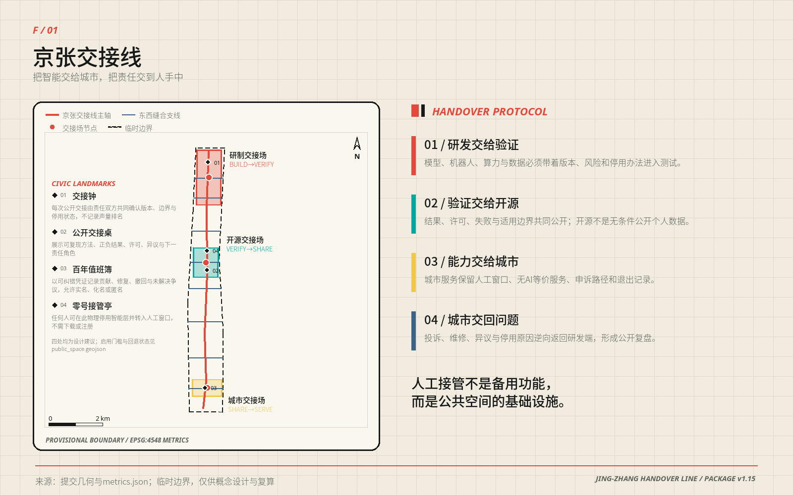
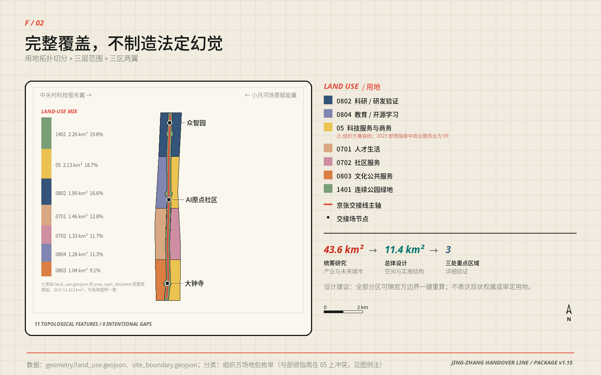
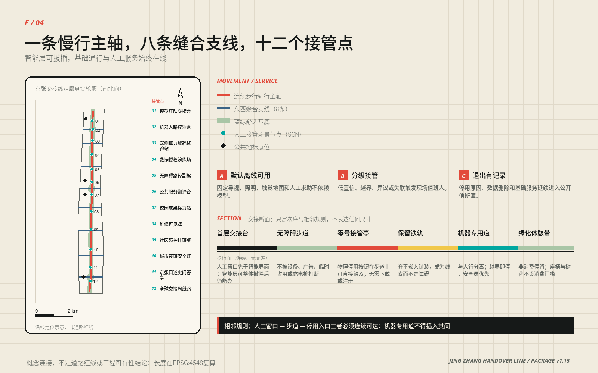
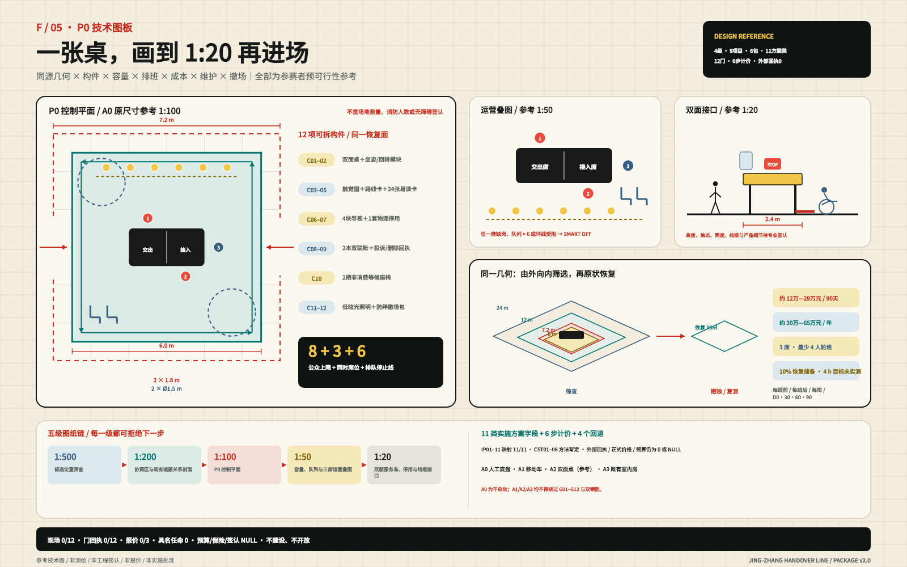
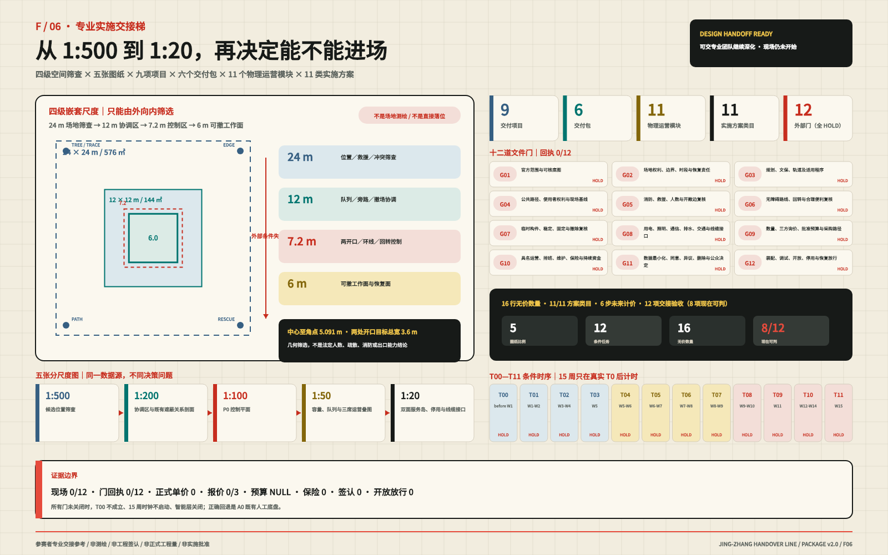

一梳三场 / 9.5 KM 公共脊 × 8 条横向联系 × 20 个成对单元
京张交接线
把废弃铁路转成一把伸向城市两翼的公共梳：连续慢行脊串起研制、开源与城市三座交接场，八条东西支线缝合街区，二十个成对单元让 AI 生产空间始终面对一项可进入、可停用、有人负责的公共服务。
智能层 / SMART LAYER
下面「AI 场景」一节显示智能层在线时的十二个场景。把开关拨到「停用」，每张卡会换成同一件事在没有 AI 时怎么办成、由谁承担。
30 SEC / 3 MIN / 15 MIN
评委分层阅读路径
主张。一梳三场、两翼八支、二十单元：一条连续公共脊把研制、验证、开源与城市服务串起来，每个 AI 生产单元都面对一个可进入、可停用、有人负责的公共界面；十二个场景都能人工接管并回到基础服务。
三项边界。① 全部空间建议基于临时边界推演，属可撤回的概念方案，不是官方红线；② 离线桌面演练 12/12、接管断言 48/48 通过，现场任务 0/12，由授权后的专业程序承接；③ 本包不代表任何机构，不得被表述为政府背书、实施批准或已建成。
七张核心图的替代文本
- F/01 总体概念。一把公共梳由 9.5 km 南北慢行脊、三座交接场、八条东西缝合支线和二十个成对单元组成；四处公共地标标记启用、异议与退出。虚线为临时范围，不能推出道路红线或权属。
- F/02 用地结构。七类概念用地拓扑切分完整覆盖临时范围，合计约 11.41 km²，11 个图斑、0 处刻意留白；三层范围 43.6 → 11.4 → 3。不表达现状权属或审定用地。
- F/03 三场三剖面。众智园、AI 原点社区、大钟寺分别形成 15.4 / 17.1 / 15.1 m 概念断面；机器空间逐段退场，人工窗口、连续步行面、轨道线索与绿荫持续存在，大钟寺机器带归零。尺寸不是道路红线。
- F/04 慢行与接管。一条连续主轴、八条缝合支线、十二个接管点；断面给出次序与相邻关系——人工窗口、步道、停用入口必须连续可达；标题行直接给单侧建议合计约 14–20 m，三处重点区实取 15.4／17.1／15.1 m。
- F/05 P0 技术图板。同源数据同时生成 1:100 控制平面、1:50 容量／队列／三席运营叠图、1:20 双面接口，以及 24→12→7.2→6 m 筛查与 36 ㎡恢复链；12 项构件、五级图纸、成本排班、维护和四个回退方案在同一图面可追溯。以上均是 E2 参赛者预可研参考，不是场地、测绘、报价、预算或专业签认；现场任务与门回执仍为 0/12。
- F/06 专业实施交接。24 × 24 m 候选筛查、12 × 12 m 协调、7.2 × 7.2 m 控制与 6 × 6 m 可逆面由外向内逐级筛查；1:500—1:20 五级图纸把 4 级释放、9 项目、6 包、11 个物理运营模块、11 类实施方案、6 步正式计价方法、12 文件闸门、12 未任命角色、12 条件任务、16 行未计价数量与 12 项验收接成同一接口。全部外部闸门仍为 HOLD，实施方案回执、正式单价、三方报价、批准预算、具名任命和开放放行均为 0／null。
- F/07 运营就绪控制。年度 1,000 小时 × 三席＝3,000 岗位小时，按 1,680 小时与 1.2 系数得到 2.143 FTE，下设 3 FTE 规划余量与最少四人轮休；服务连续性与权利安全两把钥匙均未任命。六包逐包验收、四种具名回退、八项调试退役检查和五时段 × 七表未来基线均已定义，但回执、执行、授权参与者、观察和值仍为 0／NULL。
证据链接
打开 P0 可操作原型 · jury-evidence-index.json · p0-pre-feasibility-envelope.json · implementation-handoff-register.json · proposal.md · metrics.json · sources.json · compliance_matrix.json · simulation.json · assumptions.json · p0-delivery-contract.json · public-benefit-gate.json · public-service-equivalence-contract.json · rights-inventory.schema.json
智能层已停用。十二张卡现在显示的是无 AI 等价服务——这是本方案的判据，不是降级模式：办不成，这项智能服务就不该上线。
12 / 12参与者控制的合成离线任务已完成，48 / 48 项关闭、接管、清除与回滚断言通过
8 / 8无障碍需求夹具字段完整；真实参与者观察 0、真实通过 0，不声称用户测试已完成
0 / 12现场演练由场地授权后的安全与无障碍专业方主持；现场安全、无障碍实测与公众接受度三项结论由该程序产出，责任方与触发时点见《可实施性四件事》
阅读模式
01BUILD → VERIFY
模型、机器人、算力和数据带着版本、风险、人工负责人和停用办法进入测试。
02VERIFY → SHARE
结果、许可、失败和适用边界共同公开；开源不等于暴露个人数据。
03SHARE → SERVE
公共服务保留人工窗口、无AI等价服务、申诉路径与退出记录。
04SERVE → BUILD
投诉、维修、异议与停用原因逆向返回研发端，形成公开复盘——四步闭环，问题回到它产生的地方。
人工接管不是备用功能，
而是公共空间的基础设施。
01 / OVERVIEW总览地图
一条约9.50公里的概念慢行主轴穿过临时总体范围，三座交接场对应研发—验证、验证—开源、开源—服务。八条东西支线表达缝合方向，所有线位都不是道路红线或工程结论。

geometry/site_boundary.geojson + roads.geojson + key_areas.geojsonPROVISIONAL BOUNDARY / EPSG:4548
02 / SCOPE & LAND USE三层范围 · 用地分区
统筹研究决定生态机制，总体设计把机制落成连续结构，重点区用可运行的场景验证结构。11个拓扑要素完整覆盖临时场地且无设计性重叠；代码使用公开国土空间分类子集，不表达现状权属或审定用地。
统筹研究范围
研究产业、文化、未来城市和三区两翼的协同回路，把研发、验证、开源、服务和复盘组织为共同协议。
43.6 km² / 战略与机制总体设计范围
用地、更新、建筑类型、慢行、蓝绿、市政接口、项目与分期共同形成可审查证据。
约11.4 km² / 空间与实施重点区域
众智园、AI原点和大钟寺分别承担Build→Verify、Verify→Share和Share→Serve。
3处 / 详细场景验证
geometry/land_use.geojson / 11 features / zero intentional gapsDESIGN PROPOSAL, NOT STATUTORY LAND USE
03 / KEY AREAS重点区域
三处临时重点区不是三个主题园，而是三次责任转换。每一处都同时设置功能、空间动作、场景、人工接管和实施门槛。
PROV-KEY-001研制交接场
BUILD → VERIFY
- 公开验证街与共享测试院
- 模型红队、机器人路权、端侧能耗沙盒
- 试验面与公众参观面安全分离
- 版本、风险、停机与责任人公开
门槛：企业授权、道路条件、安全论证与现场安全员。
PROV-KEY-002开源交接场
VERIFY → SHARE
- 公开交接桌与校园成果接力站
- 公共翻译、无障碍副驾、社区协作屋
- 首层连续、夜间分级、居民界面低扰动
- 许可、撤回、人工窗口并列
门槛：成果许可、隐私审查、居民协商与空间短期试用。
PROV-KEY-003城市交接场
SHARE → SERVE
- 城市交接厅、百年值班簿、口述史亭
- 智能原生服务不依赖人脸或强制App
- 保留非消费通行、休息与人工顾问
- 公开投诉、修复和退出记录
门槛：轨道、权属、消防、文保与商业公共性核验。
geometry/key_areas.geojson / three provisional polygonsDIRECTIONAL DESIGN FOR PROFESSIONAL DEVELOPMENT
04 / CIVIC GROUND交通慢行 · 蓝绿公共空间
主轴与八条支线先保证普通通行，再叠加可拔插智能层。概念绿地提供树荫、雨洪与停留；公共交接面容纳人工窗口、测试展示和无AI服务。断电或停用时，照明、导视、触觉地图和求助仍然存在。

roads.geojson + green_space.geojson + public_space.geojsonCONNECTIVITY INTENT / NO ROAD REDLINE CLAIM 05 / REVERSIBLE SERVICESAI 场景
每个场景都带四张单：最小数据、责任人、人工接管、退出记录。失联、越界、低置信或任何人提出异议时，智能功能停用，基础服务继续。
12
SCN-01 / INDUSTRY TEST模型红队交接台
版本、测试样本与风险条目进入受控评审。
人工评审 + 纸面风险登记
AI 停用后 · 同一件事怎么办成人工评审与纸面风险登记不依赖个人设备 · shift-ledger-suite.json SCN-01离线推演通过 · 现场待验证
SCN-02 / INDUSTRY TEST机器人路权沙盒
仅在封闭段记录测试轨迹，不进入公开道路。
安全员物理停机 + 封闭测试
AI 停用后 · 同一件事怎么办成现场安全员封闭测试段不依赖个人设备 · shift-ledger-suite.json SCN-02离线推演通过 · 现场待验证
SCN-03 / INDUSTRY TEST端侧能耗试验站
独立计量任务负载、能耗和温升。
人工停机 + 离线电表
AI 停用后 · 同一件事怎么办成独立电表与人工停机不依赖个人设备 · shift-ledger-suite.json SCN-03离线推演通过 · 现场待验证
SCN-04 / INDUSTRY TEST数据授权演练场
只处理自愿授权记录，演练撤回与删除。
线下授权单 + 即时删除窗口
AI 停用后 · 同一件事怎么办成线下授权单与即时删除不依赖个人设备 · shift-ledger-suite.json SCN-04离线推演通过 · 现场待验证
SCN-05 / PUBLIC SERVICE无障碍路径副驾
用户主动输入障碍，不连续跟踪个人位置。
触觉地图 + 人工问路
AI 停用后 · 同一件事怎么办成触觉地图与人工问路不依赖个人设备 · shift-ledger-suite.json SCN-05离线推演通过 · 现场待验证
SCN-06 / PUBLIC SERVICE公共服务翻译台
翻译现场文本，涉及权益决定时必须交人。
人工窗口 + 多语纸本
AI 停用后 · 同一件事怎么办成人工窗口与多语纸本不依赖个人设备 · shift-ledger-suite.json SCN-06离线推演通过 · 现场待验证
SCN-07 / KNOWLEDGE校园成果接力站
只展示作者授权的成果元数据与许可。
人工策展 + 开放目录
AI 停用后 · 同一件事怎么办成人工策展与开放目录不依赖个人设备 · shift-ledger-suite.json SCN-07离线推演通过 · 现场待验证
SCN-08 / OPERATIONS维修可见驿
匿名报修、工单状态与维护责任公开可查。
电话报修 + 人工派单
AI 停用后 · 同一件事怎么办成值班簿与人工报修不依赖个人设备 · shift-ledger-suite.json SCN-08离线推演通过 · 现场待验证
SCN-09 / CARE社区照护排班桌
算法建议可拒绝，不影响居民获得服务。
工作人员电话排班
AI 停用后 · 同一件事怎么办成社区工作人员电话排班不依赖个人设备 · shift-ledger-suite.json SCN-09离线推演通过 · 现场待验证
SCN-10 / NIGHT SHIFT城市夜班安全灯
只感知设备状态，不采集人脸。
固定照明 + 人工巡查
AI 停用后 · 同一件事怎么办成固定照明与人工巡查不依赖个人设备 · shift-ledger-suite.json SCN-10离线推演通过 · 现场待验证
SCN-11 / CULTURE京张口述史问答亭
基于清权馆藏索引，出处不确定时不生成事实。
人工讲解 + 纸本目录
AI 停用后 · 同一件事怎么办成馆藏索引与人工讲解不依赖个人设备 · shift-ledger-suite.json SCN-11离线推演通过 · 现场待验证
SCN-12 / EVENT全球交接周线路
串联试验、开源、文化与公共服务。
固定导视 + 志愿者服务
AI 停用后 · 同一件事怎么办成固定导视与志愿者服务不依赖个人设备 · shift-ledger-suite.json SCN-12离线推演通过 · 现场待验证
06 / BUILDINGS & DELIVERY建筑 · 更新项目
二十个建筑要素是类型试验单元，不是现状盘点或拆除清单。先以运营和可移动构件验证需求，再进行适应性修缮；逐栋测绘、结构、权属、消防和文保核验完成前，不形成确定拆改留结论。
现在可直接操作 SCN-05 P0 原型 →：关闭智能层、拒绝数据、比较同一结果、签发停用回执；配套交付合同锁定 8 门／5 节点／10 RACI／12 构件／8 验收，真实授权和观察仍为 0。
四步判定
- 保留 R：继续使用并补齐现状档案。
- 修缮 A：优先消防、节能、无障碍和首层开放。
- 插入 I：只用可撤除构件和短期使用验证。
- 待核 D：等待逐栋调查，不等同于拆除。
十二项最小项目
交接线基础导视、模型红队台、机器人沙盒、能耗站、公开交接桌、成果接力站、无障碍副驾、维修可见驿、城市交接厅、百年值班簿、口述史亭、全球交接周线路。
每项必须写明责任人、许可、维护、退出、数据删除与基础服务延续。
P0 参与者预可研包络
7.2 × 7.2 m 受控参考外框，内置 6 × 6 m 可逆操作面、1.8 m 净通行环、两处相对 1.8 m 开口及两处 1.5 m 回转圆。保守运营口径为公众 8 人、岗位 3 个、排队 6 人；13 周 × 5 日 × 4 小时对应 260 个公众开放小时、780 个岗位工时。
这是参与者可控的 E2 预可研筛查，不是法定容量、消防疏散结论或已测现场。
成本、维护与替代方案
90 天敏感性约 12–29 万元，年运维敏感性约 30–65 万元；含可移动构件、排班、专业复核、合理便利、维护与 10% 修复储备，不含场地、保险、税费、市政、法定服务和固定工程。正式预算与三家报价仍为 null。
A0 不建设、A1 移动推车、A2 双面桌、A3 借用室内四案并列；A2 只是当前筛选方案，任何方案都不能绕过八道门。4 人 × 4 小时同日撤除是未实测目标。
专业交付组合
5 级图纸／4 级释放／9 项目／6 包／11 个物理运营模块共用一套编号与数据源；另以 11 类实施方案字段／6 步正式计价方法连接政策、外部回执和成本文件门。12 类未来专业角色均未任命，`T00—T11` 的 15 周条件时序尚未取得真实 T0。
16 行数量有单位和推导，但现场数量、正式单价、三方报价、批准预算与金额全部为 0／null；12 项交接验收中只有 8 项能审查包内算术、编号、引用与空值边界。
十二道文件闸门
官方底图、场地权利、适用程序、公共路径、消防、无障碍、临时构件、机电交通、询价预算、运营保险、数据权利、装配开放与恢复放行逐门取回执。
当前 12/12 均为 HOLD。实施方案外部回执 0、文件门回执 0、具名任命 0、正式单价 0、报价 0/3、批准预算 null、施工或开放放行 0；因此这是一套可交接接口，不是已获准工程。
PHASE 01资料基线门
官方资料、现状盘点、无障碍基线与三个低风险人工主导试点必须共同通过。
PHASE 02权属与协同门
继承第一闸正负结果，权属、消防、社区协商、维护与持续预算同时满足。
PHASE 03专业与持续门
交通、市政、文保、隐私、安全、应急与退出资产全部经专业复核后才讨论扩区。
SCN-05 P0｜关掉 AI，仍办成同一件事
投稿包｜CLOSED_FOR_FORMAL_REVIEW｜当前开放修复 0真实现场｜BLOCKED_EXTERNAL_PRE_PILOT｜八门未齐不开场绩效主张｜BLOCKED_UNTIL_24_REAL_TASKS｜真实观察 0
合成离线原型，不是现场服务。 真实参与者观察 0、真实通过 0、场地授权 0；本页无网络、无账号、无持久化、无个人资料采集。
当前状态：基础人工路线可用；未收集任何个人信息。顶部“智能层”开关由使用者决定。
ROUTE A · SYNTHETIC SMART ASSIST合成智能建议
核心结果 SCN-05-CORE-001：从合成南入口到达公开交接桌，避开台阶，必要时转人工窗口。
- 沿固定高对比导视前进。
- 在触觉地图点确认无台阶方向。
- 遇到障碍或误导，立即停止建议并转坐姿人工窗口。
ROUTE B · NO AI / STAFFED人工与纸本路线
核心结果 SCN-05-CORE-001：从合成南入口到达公开交接桌，避开台阶，必要时转人工窗口。
- 沿固定高对比导视前进。
- 在触觉地图点确认无台阶方向。
- 遇到障碍或误导，由工作人员口述或纸本指路。
演示回执 P0-DEMO-STOP-001
智能层已关闭；本页不采集、不保存、不发送个人资料；基础人工路线继续。现实使用时须填写真实责任角色与后续节点，本演示不冒充现场记录。

F/05 · P0 TECHNICAL BOARD / PLAN + OVERLAY + INTERFACE + RESTORATIONPARTICIPANT REFERENCE / FIELD 0 / 12 · GATE RECEIPTS 0 / 12

F/06 · 1:500 → 1:20 PROFESSIONAL HANDOFF11 / 11 PLAN CLASSES · 6 COST STEPS · EXTERNAL RECEIPTS 0
 F/07 · ROSTER × TWO KEYS × ACCEPTANCE × FALLBACKAPPOINTED 0 · EXECUTED 0 / 8 · OBSERVED 0
07 / DUAL-CONTROL SHIFT LEDGER
F/07 · ROSTER × TWO KEYS × ACCEPTANCE × FALLBACKAPPOINTED 0 · EXECUTED 0 / 8 · OBSERVED 0
07 / DUAL-CONTROL SHIFT LEDGER双联交接账：
一方交出，另一方才能接入
双联交接账 0.3 把同一次换班拆成两次独立判断。交出方不能代替接入方签收；接入方必须复现最小证据后明确接受或拒收。未决项保持开放，智能层默认关闭。
交出联 / OUTGOING
- 声明对象、版本、适用范围与校验和
- 逐项列出已知失败、未决项与回滚动作
- 性能目标保持 null，直到主体与基线成立
- 交出只证明材料齐备，不证明接入成功
接入联 / INCOMING
- 由不同角色独立复现最小检查
- 逐项回应未决项，不得静默消失
- 只能明确 ACCEPT 或 REFUSE
- 拒收或证据缺失时维持人工服务并关闭智能层
SCHEMADraft 2020-12 元模式校验PASS
OFFLINE TABLETOP十二个合成场景逐条复现关闭、接管、清除与回滚12 / 12 PASS
FIELD OPERATION未完成现场复现、接入签收、安全或无障碍实测0 / 12
查看 Schema · 查看合成样例 · 查看校验报告
08 / RECALCULABLE EVIDENCE核心指标
137 项指标中，123 项为可追溯的已知、参与者预可研或专业交接值，14 项外部依赖保持未知。数字从 GeoJSON、公式、合成演练、敏感性模型与机器可审交接登记表生成，不从图面抄录；临时边界或真实报价到达后可重算，法定强度、权属、保险与正式预算不以模型补写。
≈11.4km² 临时场地EPSG:4548多边形计算；低置信度。
≈19.8%概念绿地比例结构性绿地，不是现状净增或法定指标。
≈9.1%公共交接面比例支持非消费使用与人工服务。
≈9.5 km连续交接线概念慢行主轴，不是道路红线。
≈18.9 km概念线路总长主轴加八条东西连接意图。
12 / 4场景 / 产业验证全部可逆，四个只在沙盒测试。
20建筑类型单元不等于现状建筑或获批规模。
3条件触发分期不随日历自动实施。
8 / 5 / 10P0 门 / 节点 / RACI单场景 90 天交付合同；当前全部未开始。
6 / 12群体 / 场景公共利益闸任一公共生活底线失败，智能层关闭。
24 / 0计划共测下限 / 已完成需真实参与者、合理便利与补偿；当前没有实测。
7.2 × 7.2 mP0 参考控制外框参与者预可研包络，不是获批场地或消防结论。
24 → 12 → 7.2 → 6 m四级外到内筛查前两级排除错误落位，不主张场地或新增占地。
9 / 6 / 11项目 / 包 / 物理运营模块交付组合唯一编号；不代表采购或施工。
11 / 11 · 6实施方案字段映射 / 计价步骤参赛者字段与方法映射完整；外部回执、正式价格和预算仍为 0 或 null。
12 HOLD / 0文件闸门 / 回执任一门未关闭，条件工期和现场都不启动。
3,000 → 2.143 → 3岗位小时 / FTE 下限 / 规划 FTE最少四人轮休；具名人员与任命回执均为 0。
0 / 2 · 0 / 8双钥匙回执 / 调试执行任一钥匙缺失即关；八项调试与退役检查均未执行。
5 × 7 / 0未来基线时段 × 表 / 观察采样框与空表已定义，授权参与者和值仍为空。
8 + 3 + 6公众 / 岗位 / 排队上限保守运营筛查值；法定容量仍待专业签认。
≈12–29 万90 天成本敏感性排除场地、保险、税费、市政与固定工程；正式预算为 null。
≈30–65 万年度运维敏感性参与者模型，不是报价；含人工、维护和合理便利。
12 / 12离线桌面任务参与者控制、合成数据；不是现场证据。
48 / 48接管断言关闭、接管、清除与人工回滚全部通过。
8 / 8无障碍需求夹具设计字段覆盖；真实观察与真实通过均为 0。
0 / 12现场演练现场、安全与公众验证仍待授权。
4可纠错公共地标启用闸、异议与退出均可定位。
UNKNOWN BY DESIGN容积率 · 建筑高度 · 权属 · 道路红线 · 市政容量 · 投资 · 产值不以模型推断替代审定控制与专业调查。
p0-pre-feasibility-envelope.json × implementation-handoff-register.jsonTECHNICAL REFERENCE / FORMAL BUDGET NULL
09 / REVIEW LEDGER任务覆盖 · 自检状态
机器检查证明文件完整、几何有效、指标一致和证据可追溯；它不替代城市规划、建筑、交通、景观、市政、文保、法律与公众的最终判断。
任务覆盖
- 公告 1.3：世界级生态、新城市形态、人才城区
- 公告 1.4：统筹、总体、三处重点区域
- 公告 1.5：产业、更新、交通市政、公园与风貌
- agent.1—6：命名、案例、场景、地标、文化、运营
- 6项标准 + 15项专业设计深度
自检状态
BOUNDARY临时属性与重算触发器已保留PASS
TOPOLOGY用地完整覆盖且无设计重叠PASS
METRICS面积、比例与数量可追溯PASS
TAKEOVER十二场景有人工接管与退出PASS
OFFLINE无CDN、远程字体、API或跟踪PASS
来源
- 征集公告、任务书与仓库场地资料包
- 临时边界与重点区只作概念计算
- 六个国际案例仅转述机构官网机制
- 全部图形、符号与排版程序化原创
- 详见 sources.json 与 copyright_statement.md
假设
- 官方边界替换后重算全部图层与指标
- 控规、权属、道路、市政、消防、文保待补
- 建筑单元不是拆改留结论
- AI场景未获正式部署、采购或运营批准
- 详见 assumptions.json 与 constraints.geojson